Reverse-engineering MIDI devices, AKAI MPK Mini Mk3
I recently bought a MIDI controller / keyboard / drumpad combo thingie. Not because I wanted to make music - but because of the pads and knobs that I can use to control things like jump between workspaces adjust the audio volume in my PC etc.
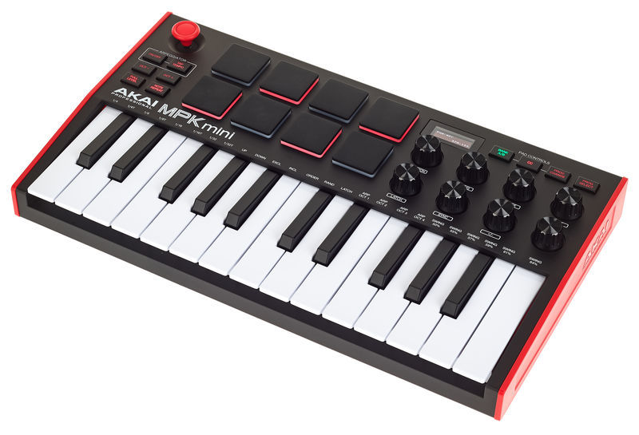
What can I do with it?
Lots of things! I’ve already got implemented:
Piano keys
Various key mappings to:
- Toggle audio between speakers and headphones
- Set random wallpaper (from a directory of curated wallpapers)
- Open a new empty workspace
Drumpads to jump between workspaces
There are 8 pads so I can jump between 8 workspaces: (I number my less-often used workspaces above that 8.)
(Imagine my finger hitting a drumpad)
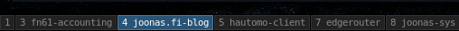
The drumpads have LEDs that light up when you hit them.. really satisfying feedback. 🤪
Control audio volume
(Imagine my fingers twisting a knob)
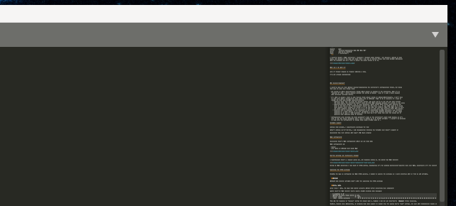
It’s really satisfying having a physical knob to control the volume. Takes me back to the olden days!
Control text editor’s column count
(Imagine my fingers twisting a knob)
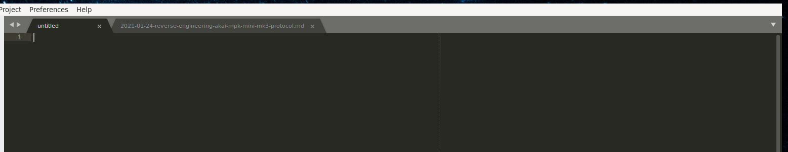
Control window size
(Imagine my fingers twisting a knob)
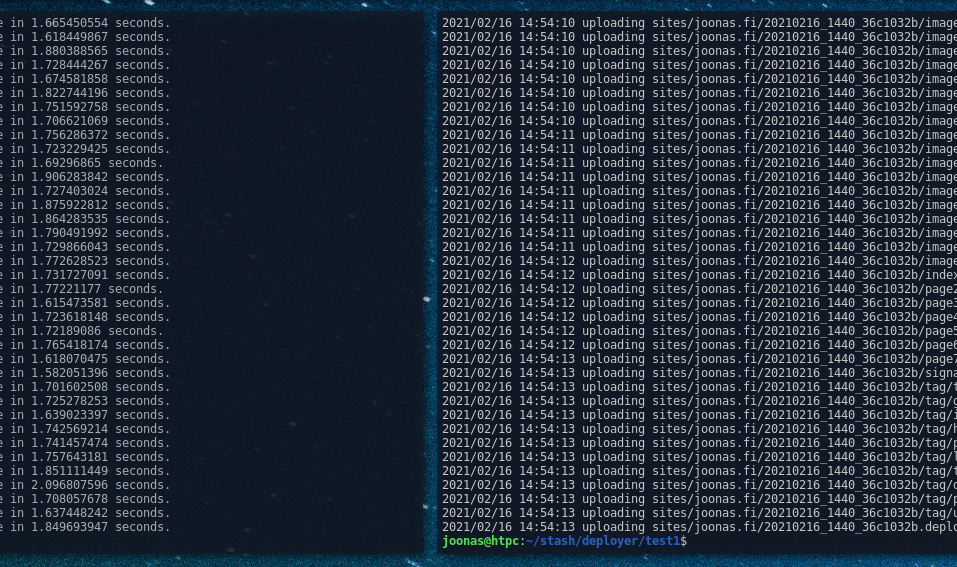
Use a sustain pedal to trigger custom actions
I have this sustain pedal connected to the MIDI controller:
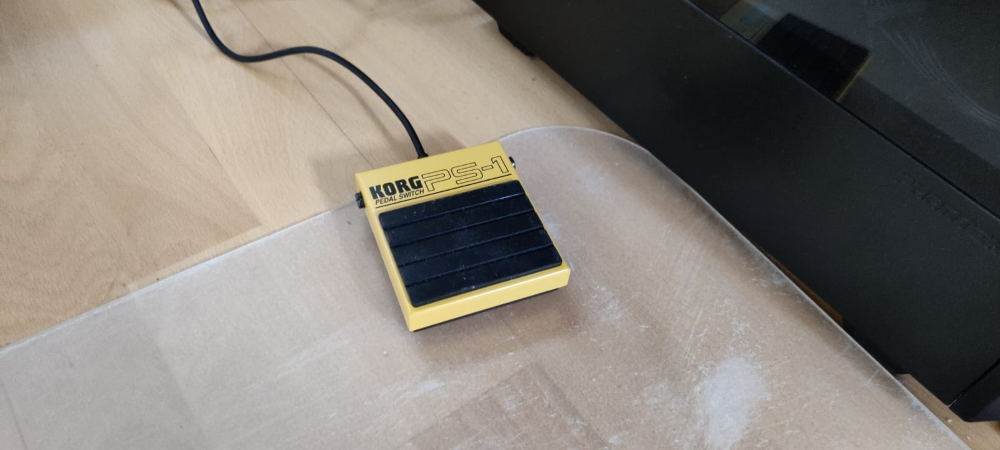
I can use Turbo Bob’s triggers to easily run any command by pressing my foot:
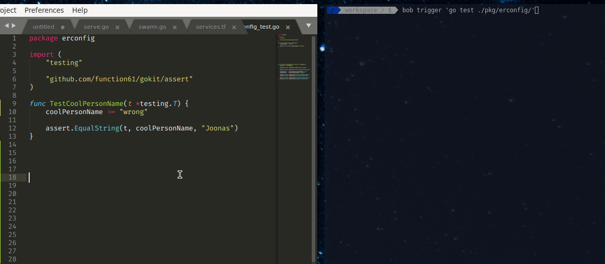
Yes, I’m aware of “watches” that can do things automatically when a file is changed, but this is more
powerful.. I’ve even used it to $ scp-transfer built binaries to a remote another computer when I
needed to quickly iterate on something on a remote computer.
What got me into this path of even considering reverse-engineering
I specifically purchased this controller because it had rotary encoders, i.e. “endless knobs” (so that there isn’t a physical limit to how much you can turn the knob left/right).
Turned out they weren’t endless out-of-the-box - I was disappointed. At first I thought that the software just lazily didn’t support that. The controller stopped sending signals after it had reached the parameter’s software-imposed limit.
I had an intuition and I tested AKAI’s own music software (MPC Beats) and sure enough, it had deeper integration with the controller and it configured some of the knobs to relative mode when you opened their music program.
Thus I knew that this is controllable via software / the presets configurator.
Why reverse-engineer?
I could’ve done all this without reverse-engineering the controller’s configuration format, but it gives me some nice things like:
-
Not having to worry about/manually change which preset is enabled in the controller, when I enter “control PC” mode - now my program uploads the config on-the-fly - even if I used a music program with different settings before switching to PC control mode.
- Presets are basically music programs the controller is supposed to control. They set MIDI channels / MIDI controller numbers related to each pad/knob/key, knob names & modes, knob value ranges etc.
- Usually when you jump from a program to another like from AKAI’s music making software MPC Beats -> my MIDI mapping bridge, you have to change the program-to-control from the MIDI controller, unless the two programs expect the exact same config (highly unlikely) OR the program can configure the controller on-the-fly
-
If I want to assign a knob to some new feature (like adjust volume or window width/height), I don’t have to jump into AKAI’s configurator (that works only on Windows / Mac) to do it manually if I need to change the knob mode between absolute/relative
- Absolute means that the knob has min/max values, and after you’re at max and you keep turning the knob right, the controller doesn’t send any more MIDI messages because it’s already at max value
- Absolute/relative depends on your parameter. Audio volume works nicely with absolute but only if the knob is the “authoritative” source for the level. I.e. if you twist knob to 75 % and some program later changes the volume to 25 %, then when you slightly twist the MIDI knob to left, the audio suddenly jumps from 25 % to 74 %. If this is your case then relative might work better. It also depends if your target parameter supports relative adjustments.
- Relative knob is required if your parameter is not expressible between (min,max), e.g. infinite timeline in a video editor, or if your parameter’s value range demands precision. If your video timeline is an hour (= 3600 seconds), and the knob has 0-127 range then even the tiniest bit of absolute knob twisting jumps 28 seconds.
-
Configuration also includes the knob’s name (= parameter’s name it controls), which is shown when you are twisting the knob in the MIDI controller’s small OLED display. OTOH I couldn’t be bothered to jump into the configurator to change those names if/when need to remap knobs in the future, for what is essentially a gimmick, but now that I get it for “free”.. it’s nice.
AKAI’s program editor
I discovered you can change the knob settings (name, mode etc.) from the program editor, which:
- Works manually - you’ve to open the program to change the settings
- Only works on Windows and Mac
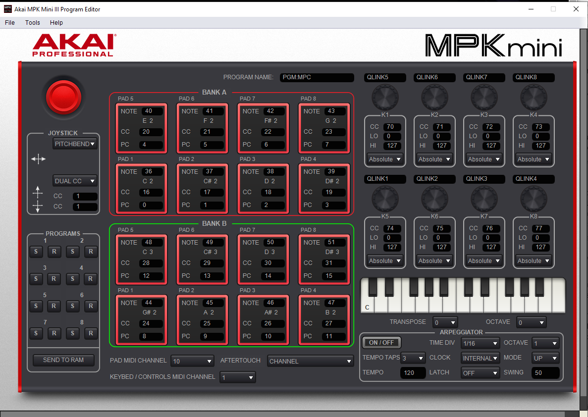
How the settings are technically changed
I hypothesized there’s MIDI a request going out when you upload settings. AKAI’s editor had MIDI monitor window:
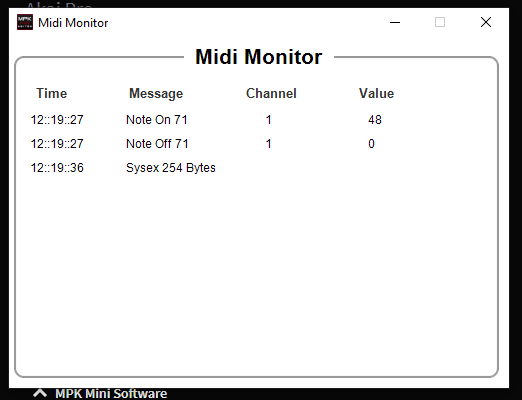
During my previous MIDI adventures I had heard of SYSEX before, remembering it’s for sending manufacturer-specific data over MIDI. So upon seeing that I immediately had a “eureka” moment. Essentially it’s for everything else that MIDI (the standard) hasn’t specified. Configuration file formats are definitely things that MIDI doesn’t have ready-made messages for.
Manufacturers usually use SYSEX to configure their devices.
Unfortunately, AKAI’s “Midi Monitor” didn’t show the contents of the SYSEX message.
Capturing the SYSEX exchange
Knowing the AKAI is configured via MIDI SYSEX packets, I needed to capture the exchange so I could interface with it from my own software.
Windows
I tried to use some dedicated Windows-based MIDI monitor software but it didn’t work for capturing the SYSEX exchange. Akai’s program editor software didn’t work when the monitor software was running.
Linux, ALSA
With Windows I had a dead-end regarding MIDI capture. Enter Linux + WINE. Despite my expectations with WINE & exotic software the AKAI’s program editor actually worked (after installing some MSVC component), with minor visual defects.
ALSA’s built-in MIDI monitor really easily showed incoming MIDI messages:
$ aseqdump -p 28
Waiting for data. Press Ctrl+C to end.
Source Event Ch Data
28:0 System exclusive F0 47 00 49 67 01 76 01 50 47 4D 3A 4D 50 43 00 00 00 00 00 00 00 00 00 09 01 00 04 00 00 04 00 00 00 03 00 78 00 00 00 00 02 01 01 24 00 10 25 01 11 26 02 12 27 03 13 28 04 14 29 05 15 2A 06 16 2B 07 17 2C 08 18 2D 09 19 2E 0A 1A 2F 0B 1B 30 0C 1C 31 0D 1D 32 0E 1E 33 0F 1F 00 46 00 7F 51 4C 49 4E 4B 35 00 00 00 00 00 00 00 00 00 00 00 47 00 7F 51 4C 49 4E 4B 36 00 00 00 00 00 00 00 00 00 00 00 48 00 7F 51 4C 49 4E 4B 37 00 00 00 00 00 00 00 00 00 00 00 49 00 7F 51 4C 49 4E 4B 38 00 00 00 00 00 00 00 00 00 00 00 4A 00 7F 51 4C 49 4E 4B 31 00 00 00 00 00 00 00 00 00 00 00 4B 00 7F 51 4C 49 4E 4B 32 00 00 00 00 00 00 00 00 00 00 00 4C 00 7F 51 4C 49 4E 4B 33 00 00 00 00 00 00 00 00 00 00 00 4D 00 7F 51 4C 49 4E 4B 34 00 00 00 00 00 00 00 00 00 00 0C F7
This was for response to “read settings” for preset slot 1. However I did not yet know how to request this reading.
Despite incoming capture being easy, after many web searches, it seems ALSA has no outbound MIDI capture support (I needed this for seeing how to “write settings” or to “please read settings”).
Drumstick MIDI Monitor seems inbound-only. No luck on Ask Ubuntu.
There are following scenarios:
| Scenario | Outbound MIDI | Inbound MIDI |
|---|---|---|
| Read settings | SYSEX for “read settings” | SYSEX for “here are the settings you requested” |
| Write settings | SYSEX for “write settings” | (As far as I understand, no response needed) |
Linux, Wireshark USB capture
Knowing our device’s MIDI runs on top of USB transport, enter
Wireshark USB sniffing.
For our purposes USBaudio-midi is the USB sub-protocol that we’re interested in.
Enable usbmon module in kernel to enable monitoring USB traffic:
$ modprobe usbmon
Wireshark showed multiple usbmon interfaces, at first I didn’t understand, but
upon reading documentation it said:
The character device is usually called /dev/usbmonN, where N is the USB bus number. Number zero (/dev/usbmon0) is special and means “all buses”. Note that specific naming policy is set by your Linux distribution.
These correspond to $ lsusb output:
Bus 006 Device 001: ID 1d6b:0003 Linux Foundation 3.0 root hub
Bus 005 Device 001: ID 1d6b:0002 Linux Foundation 2.0 root hub
Bus 004 Device 001: ID 1d6b:0003 Linux Foundation 3.0 root hub
Bus 003 Device 001: ID 1d6b:0002 Linux Foundation 2.0 root hub
Bus 002 Device 001: ID 1d6b:0003 Linux Foundation 3.0 root hub
Bus 001 Device 011: ID 1050:0407 Yubico.com Yubikey 4/5 OTP+U2F+CCID
Bus 001 Device 013: ID 09e8:0049 AKAI Professional M.I. Corp. MPK mini 3
Bus 001 Device 009: ID 1050:0407 Yubico.com Yubikey 4/5 OTP+U2F+CCID
Bus 001 Device 007: ID 046d:c534 Logitech, Inc. Unifying Receiver
Bus 001 Device 003: ID 05e3:0610 Genesys Logic, Inc. Hub
Bus 001 Device 002: ID 19f7:0003 RODE Microphones RODE NT-USB
Bus 001 Device 001: ID 1d6b:0002 Linux Foundation 2.0 root hub
It shows me that all my interesting devices are on bus 1. Therefore I can use usbmon0 or usbmon1.
At first I was only seeing lots of undissected packages (what are all these URB_BULK’s?) with generic USB traffic:
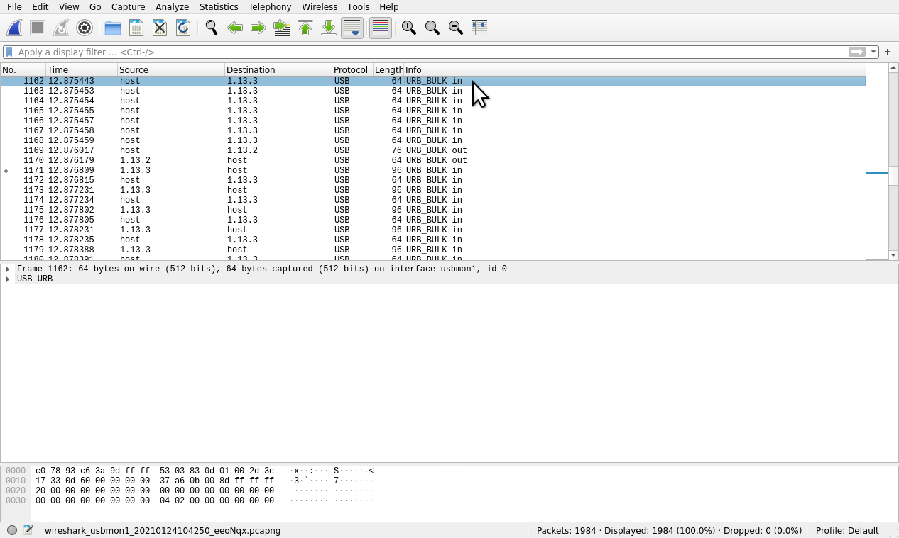
But I’m glad I ran into someone’s blog post (link in blog post) that helped me understand the problem.
The solution: first start Wireshark monitor on USB bus 1 and only after plug in the USB cable of AKAI, so Wireshark gets ahold of the USB descriptor and learns how to dissect the USB traffic.
I guess it’s a handshake where the device introduces itself and tells what protocols it speaks (in
our case: USBaudio-midi).
These protocol identifiers are not present in subsequent messaging (I guess that makes USB pretty stateful),
so Wireshark doesn’t know what type of data is flowing between the endpoints if it hasn’t seen the handshake.
Makes sense now after understanding more.
It now works:
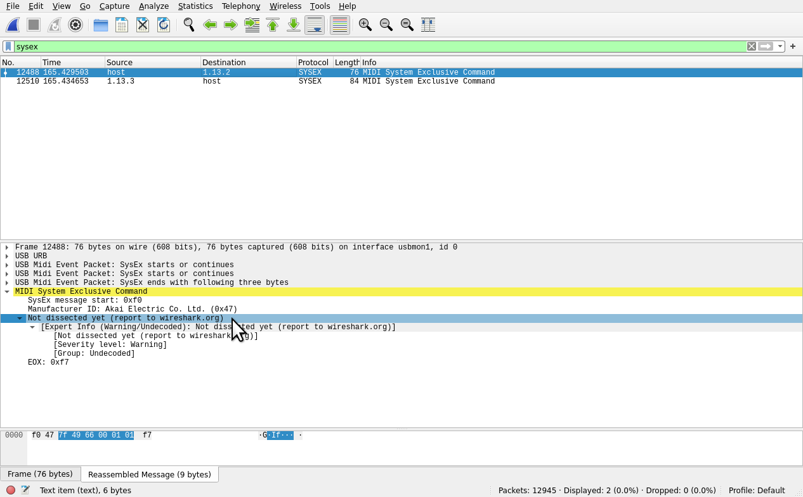
Reverse-engineering the contents of the SYSEX packets
So, there are SYSEX messages for each preset slot:
- Write settings
- Read settings
There also is for reading/writing into “RAM slot”. It’s meant for on-the-fly configuration which is wiped if you manually select another preset from the controller (or restart it).
Hexdumping it reveals it’s a pretty straightforward to reverse-engineer:
00000000 47 00 49 67 01 76 01 50 47 4d 3a 4d 50 43 00 00 |G.Ig.v.PGM:MPC..|
00000010 00 00 00 00 00 00 00 09 01 00 04 00 00 04 00 00 |................|
00000020 00 03 00 78 00 00 00 00 02 01 01 24 00 10 25 01 |...x.......$..%.|
00000030 11 26 02 12 27 03 13 28 04 14 29 05 15 2a 06 16 |.&..'..(..)..*..|
00000040 2b 07 17 2c 08 18 2d 09 19 2e 0a 1a 2f 0b 1b 30 |+..,..-...../..0|
00000050 0c 1c 31 0d 1d 32 0e 1e 33 0f 1f 00 46 00 7f 51 |..1..2..3...F..Q|
00000060 4c 49 4e 4b 35 00 00 00 00 00 00 00 00 00 00 00 |LINK5...........|
00000070 47 00 7f 51 4c 49 4e 4b 36 00 00 00 00 00 00 00 |G..QLINK6.......|
00000080 00 00 00 00 48 00 7f 51 4c 49 4e 4b 37 00 00 00 |....H..QLINK7...|
00000090 00 00 00 00 00 00 00 00 49 00 7f 51 4c 49 4e 4b |........I..QLINK|
000000a0 38 00 00 00 00 00 00 00 00 00 00 00 4a 00 7f 51 |8...........J..Q|
000000b0 4c 49 4e 4b 31 00 00 00 00 00 00 00 00 00 00 00 |LINK1...........|
000000c0 4b 00 7f 51 4c 49 4e 4b 32 00 00 00 00 00 00 00 |K..QLINK2.......|
000000d0 00 00 00 00 4c 00 7f 51 4c 49 4e 4b 33 00 00 00 |....L..QLINK3...|
000000e0 00 00 00 00 00 00 00 00 4d 00 7f 51 4c 49 4e 4b |........M..QLINK|
000000f0 34 00 00 00 00 00 00 00 00 00 00 0c |4...........|
000000fc
If you compare it to the screenshot of the configurator: these stand out:
- QLINK 1-8. these must be the sections for each knob name and its settings
- Distance between starts of QLINK5 and QLINK6 is 20 bytes
- I tested from UI that knob name max length is 16 bytes
- Absolute/relative mode
- CC/LO/HI should all be one byte long
My process was to use the AKAI program editor:
-
Capture writing the default configuration to the controller
-
Making a small change to some individual setting and capture writing this configuration
-
Visually inspect the difference in these messages
Here’s me comparing a difference when I changed knob 1 mode from absolute to relative:
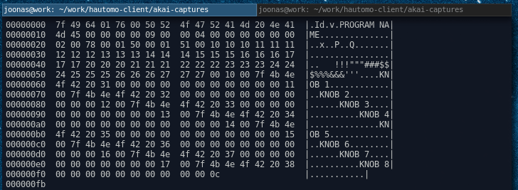
It’s quite easy to just use your eyes to see where that setting is stored. A couple of hours later, I had reverse-engineered the whole binary file format.
Finished support in my software
Further hurdles
I also had hurdles building my own software, where incoming SYSEX messages were discarded by the library I was depending on. I traced the bug to some C++ code several layers down, fixed it and helped to get the fix to the above layers.
Usage
Here’s how I send the configuration to the MIDI controller:
func akaiSendSettings(ctx context.Context) error {
drv, err := driver.New()
if err != nil {
return err
}
midiOut, err := midi.OpenOut(drv, -1, "MPK mini 3:MPK mini 3 MIDI 1 28:0")
if err != nil {
return err
}
defer midiOut.Close()
msg, err := mpkminimk3.CustomSettings(
"Hautomo",
10, // channel for pads TODO: this is -1 for some reason. we actually mean 9
mpkminimk3.AutopopulatePads(36),
mpkminimk3.AutopopulatePads(36), // TODO
1, // channel for keys and knobs TODO: is this 1 or 0?
mpkminimk3.KnobAbsolute0to127("KNOB 1", 70), // "K1"
mpkminimk3.KnobAbsolute0to127("KNOB 2", 71),
mpkminimk3.KnobRelative("i3 panel width", 72), // "K3"
mpkminimk3.KnobAbsolute0to127("KNOB 4", 73),
mpkminimk3.KnobAbsolute0to127("KNOB 5", 74),
mpkminimk3.KnobAbsolute0to127("Sublime cols", 75),
mpkminimk3.KnobRelative("i3 panel height", 76),
mpkminimk3.KnobAbsolute0to127("Volume", 77), // "K8"
).SysExStore(mpkminimk3.ProgramRAM)
if _, err := midiOut.Write(msg); err != nil {
return fmt.Errorf("error sending msg: %w", err)
}
return err
}
This is open source code, but is not officially published yet as of me writing this. It will land in Hautomo (my home automation software).
If you’re in a hurry and are interested in the code, I have put up the .zip for download. License: do not use in commercial code.

Thanks for reading! 😍
If you like my writing, consider following me on Twitter.
Stay updated on my blog posts & projects - sign up for
my newsletter. 🚀
No spam, unsubscribe any time.
RSS also available.